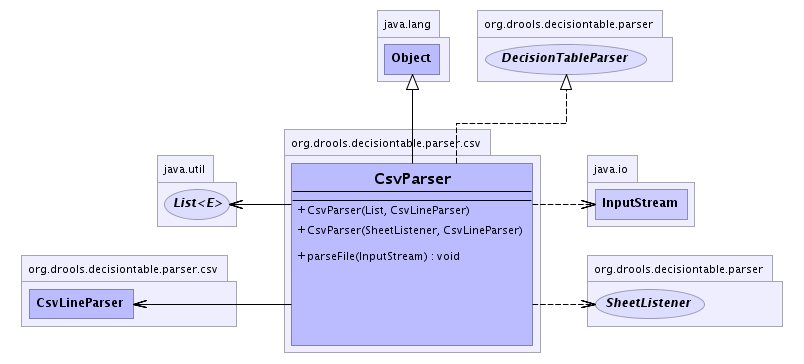

org.drools.decisiontable.parser.csv
Class CsvParser
java.lang.Object
 org.drools.decisiontable.parser.csv.CsvParser
org.drools.decisiontable.parser.csv.CsvParser
- All Implemented Interfaces:
- DecisionTableParser
public class CsvParser
- extends java.lang.Object
- implements DecisionTableParser
Csv implementation. This implementation removes empty "cells" at the end of
each line. Different CSV tools may or may not put heaps of empty cells in.
Csv format is almost identical to XLS, with the one limitation: Merged cells
are not supported. To allow constraints to span across cells for the one
column, this is achieved by using "..." at the end of a cell value. If a cell
value ends with "..." then it will be taken as spanned from the previous
cell.
-
- 
|
Method Summary |
void |
parseFile(java.io.InputStream inStream)
Parse an input stream, store the resulting rulebase. |
| Methods inherited from class java.lang.Object |
clone, equals, finalize, getClass, hashCode, notify, notifyAll, toString, wait, wait, wait |
CsvParser
public CsvParser(SheetListener listener,
CsvLineParser lineParser)
CsvParser
public CsvParser(java.util.List listeners,
CsvLineParser lineParser)
parseFile
public void parseFile(java.io.InputStream inStream)
- Description copied from interface:
DecisionTableParser
- Parse an input stream, store the resulting rulebase.
- Specified by:
parseFile in interface DecisionTableParser